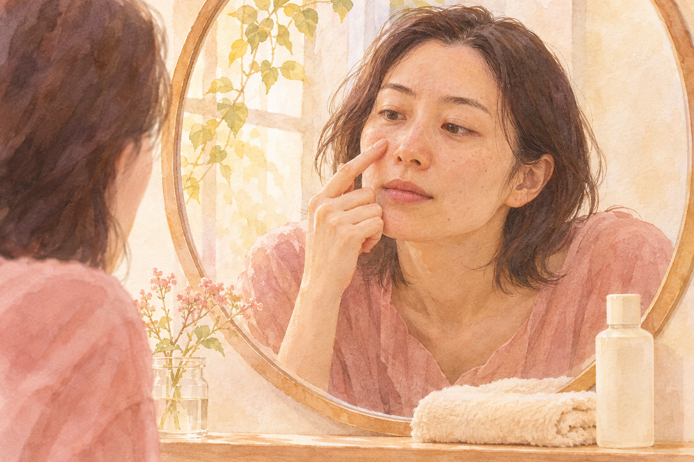

SKIN NOTE05 / 08

04
집에서는
이 다섯 가지
레티놀은 임신·수유 중엔 쓰지 않아요
미국피부과학회 안내 기준일반 정보 · 개인차가 있어요

원인을 알면 관리 방향이 보여요
01
피지와 땀이 나오는 작은 입구들이
모여 있는, 살짝 파인 자리예요
02
피지가 많아요
피지 분비가 많으면 커 보여요
탄력이 떨어졌어요
피부가 처지면 더 도드라져요
모낭이 원래 커요
타고난 체질과 관련 있어요
여기에 막힘·자극이 더해지면 더 커 보여요
03
오후면 코·이마가 번들번들
→ 피지 쪽
볼이 예전보다 처진 느낌
→ 탄력 쪽
블랙헤드·여드름이 잦아요
→ 막힘 쪽
여러 개 해당해도 괜찮아요. 정확한 건 진료로
04
레티놀은 임신·수유 중엔 쓰지 않아요
05
병원 치료도 모공을 없애지는 못해요.
효과가 크지 않다는 정리도 있어요.
바르는 약
비타민 A 계열 처방약
화학 박피
피부 겉층을 벗겨 내요
프랙셔널 레이저
작은 점으로 나눠 쏴요
고주파 미세침
가는 바늘로 열을 전달해요
방법과 횟수는 피부를 보고 함께 정해요
06
효과와 부작용은 사람마다 달라요
붉어짐 · 화끈거림 · 붓기
대개 가라앉지만 오래가기도 해요
색소침착
피부색이 어두울수록 위험이 커요
오래가거나 심각한 합병증
드물지만 보고돼 있어요
진물·물집, 심해지는 붉어짐은 바로 연락하세요

07
제 모공은 어떤 원인이 큰가요?
집 관리로 충분한 상태인가요?
권하는 방법과 횟수, 이유는요?
제 피부는 색소침착 위험이 큰가요?
저희 병원 안내
[추후 기입: 위치 · 진료 시간 · 예약 방법]